Node Reference
This page details all the VPE-specific nodes that we have created for visual scripting.
You can recognize VPE nodes easily by their color: they are orange. When creating new nodes, VPE event nodes can be found under Events/Pinball, and other nodes simply under the root's Visual Pinball.
Besides the simple read/write/event nodes, there are a bunch of nodes that solve common patterns in pinball games. While you could implement the same logic using Unity's standard nodes, we recommend using these custom nodes, because they save you space and thus increase the readability of your graphs.
However, it's hard to use them without knowing about them, so we recommend reading through this page in order to familiarize with them.
Coils
On Coil Enabled
This event is triggered when the status of any coil in a list of coils is enabled.
On Coil Changed
This coil event triggers when the status of a coil in a list of coils changes.
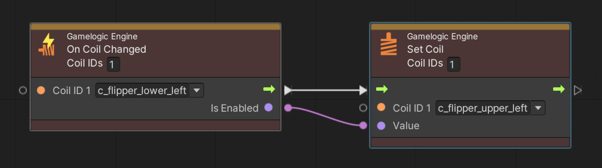
On All Coils Enabled
This coil event triggers when all coils in a list of coils are enabled.
Set Coil
This node assigns a given value to one or multiple coils and keeps that value. This is useful when both the enabled and disabled status are important. Otherwise, use the Pulse Coil node, which enables a coil, and automatically disables it after a short delay.
A typical use case for this node is linking the flipper coil to a switch event. Here an example of a game that has an upper flipper and a lower flipper, both linked to the same left flipper switch.
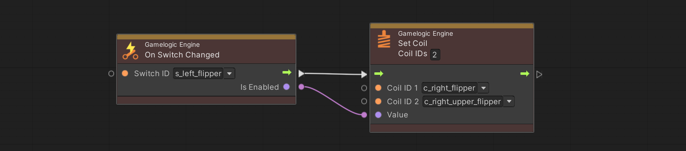
As seen in the screenshot, you can set the number of affected coils in the header of the node. Increasing the number will add additional ports below.
Pulse Coil
This node enables one or multiple coils and disables them after a given delay. This is useful when you only care about the "enabled" event, which often the case. Here is an example of the eject coil of the trough being pulsed when the running state is entered.
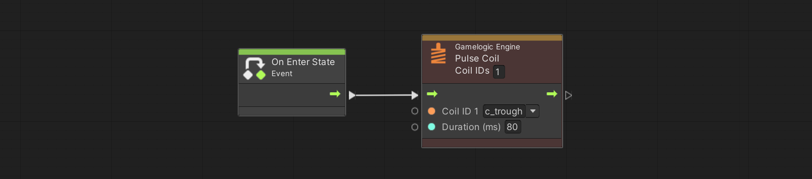
Get Coil Value
This node returns the current coil status of a given coil. While usually you should rely on player and table variables for saving and retrieving status, it still has its usage. For example, you might need to see if a coil is still enabled after a period of time.
Switches
On Switch Enabled
This is probably the most common switch event you will use. It triggers when any switch in a list of switches is enabled.
Here is an example of the drain switch increasing the current ball variable.
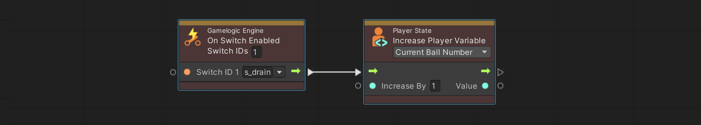
On Switch Changed
The other switch event triggers in both cases, when the switch is enabled, and when it gets disabled. The classic example already mentioned above is the flipper buttons.
On All Switches Enabled
This switch event triggers when all switches in a list of switches are enabled.
Set Switch
This node enables or disables one or multiple switches.
Pulse Switch
This node enables one or multiple switches and disables them after a given delay.
Get Switch Value
This node returns the current switch value of a given switch. While usually you should rely on player and table variables for saving and retrieving status, it still has its usage. For example, you might want to not add the state of a kicker to the variables and rely on the kicker switch directly instead.
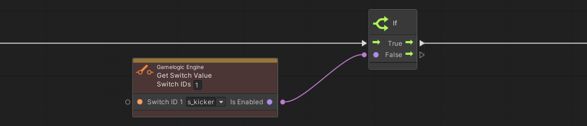
You can also add multiple switches, in which case the output is only true if all switches are enabled.
Lamps
Lamps are a bit more complex than coils and switches, because besides simply being on or off, they have an intensity and a color. Additionally, they can be set to a blinking state. This means that all our lamp nodes include a dropdown indicating how it should be driven, with the port types changing accordingly:
- Status corresponds to an
enum, one of On, Off and Blinking. - On/Off is a
bool, wheretruecorresponds to the On status, andfalseto the Off status. - Intensity corresponds to a
floatand is explained in more detail below. - Color has its own
Colortype.
These four modes allow you to completely control a lamp (with On/Off setting the status using a bool). However, there is a second factor that defines how the lamp will actually react, and that is its mapping type in the lamp manager.
See, VPE supports a wide range of gamelogic engines, and they often don't have an internal API as rich as our visual scripting package. For example, when PinMAME sets a light to the value of 255, it doesn't know whether it just "turned it on" from 0 or whether it was "faded in" from a previous non 0 value. That's information we have to manually set in the lamp manager (in this example, the mapping type would be Single On|Off and Single Fading respectively).
That said, the only mode that might lead to confusion is Intensity, mainly because it's the only value that PinMAME emits. So, if you choose Intensity, here is how the value is treated depending on each mapping type:
- Single On|Off sets the status of the lamp to On if the value is greater than 0, and to Off otherwise.
- Single Fading sets the intensity to the value divided by maximal intensity. We recommend setting the maximum intensity to 100 in the lamp manager and use values from 0 to 100 in the visual scripting nodes.
- RGB sets the intensity, where the value is between 0 and 1.
- RGB Multi you probably will not use. It sets the channel defined in the mapping to the value divided by 255 (yes, it's very PinMAME specific).
Note
When creating your proper game logic, you should rely on variables instead of lamp status in your logic. However, since you can also use visual scripting along with different gamelogic engine such as PinMAME, where you can't access the internal state, we also provide nodes for lamp events and retrieving their value.
Let's jump to the nodes.
Set Lamp
This node assigns a given value to a lamp defined by its mapped ID. This also triggers the lamp changed event.
In the example, we have defined a player variable of type bool called Yellow Bank Lit. We synchronize the lamp status with the variable by setting the lamp with the ID l_yellow_bank to the value of the variable when it changes.
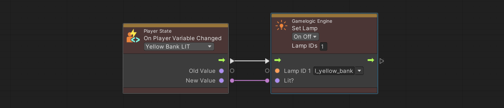
Get Lamp Value
This node retrieves the current value of a lamp by its mapped ID. As described before, the type of the output port depends on which mode has been selected.
A typical usage is to check whether a lamp has previously been set, where no variable is available. That's the case if you're expanding PinMAME with additional logic.
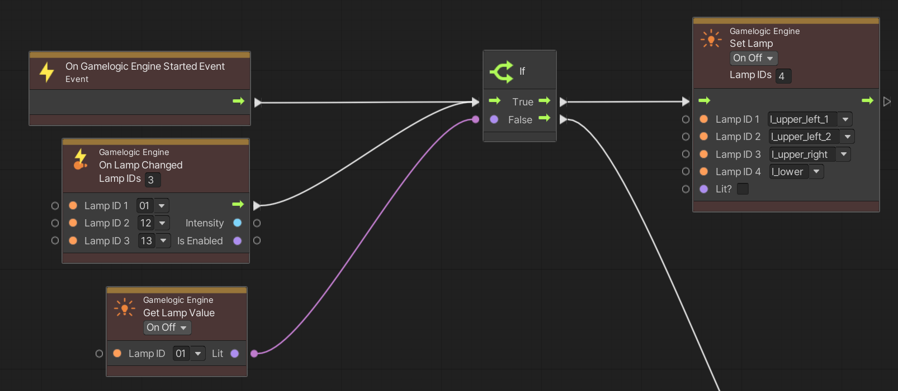
This is an example from the table Rock (Premier 1985), where PinMAME doesn't emulate the starting light sequence. The graph above checks if lamp 01 is lit and turns off a bunch of lamps if that's not the case (otherwise, it's more complicated). It does this when lamp 01, 12 or 13 changes, and at the beginning of the game.
On Lamp Changed
This node triggers when any of the defined lamps changes state. Its application is quite similar to the previous get lamp value node, where the example covers this node as well.
Lamp Sequence
This node takes in a list of lamps and loops through each lamp with a given step size, while applying a given value to the active lamp(s) and another value to the inactive lamps. The counter is internal to the node and increases each time the node is processed.
The inputs are the following:
- Lamps - The list of lamps to loop through. Note that light groups are flattened, i.e., split into single lamps.
- Step - By how much the internal counter increases when the node is processed. It's also how many lamps are active.
- Value - The value that is applied to the active lamps
- Non Step Value - The value that is applied to inactive lamps.
As an example, here is a loop that gets triggered when lamp 13 gets lit and repeats until lamp 13 is unlit. On each iteration, two lamps get turned on, while the others are turned off. It starts with the first two lamps, then the second two lamps, then lamp 5 and 6, and so on. All these lamps are part of the l_auxiliary light group, which contains 20 lamps. After lamp 19 and 20 were turned on, it goes back to lamp 1 and 2. After each iteration, the loop pauses for 60ms before continuing.
Finally, when lamp 13 is turned off, the loop exits, and the entire light group is turned off as well.
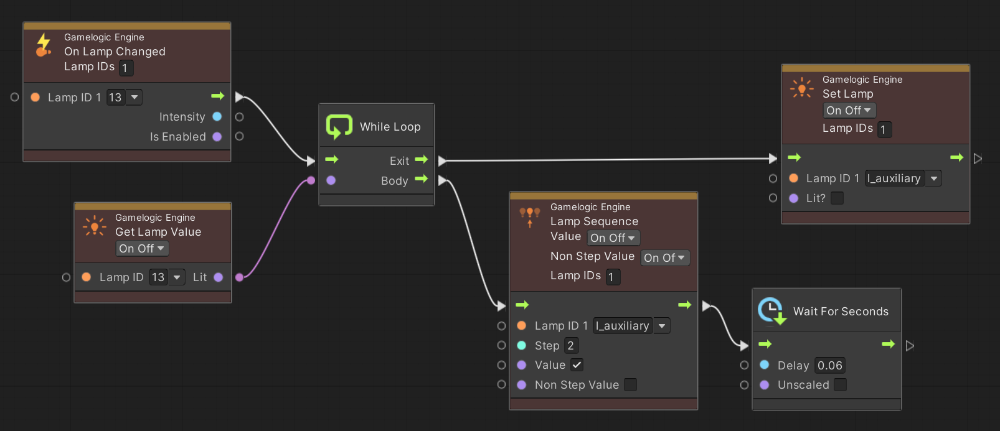
Switch Lamp
This node takes in a list of lamps, matches them based on an input, and updates them based on the match.
In the following example we enable the lamp on an EM backglass which indicates the current ball in play. As an input we get an integer representing the ball number, and we toggle the respective lamp based on that value.
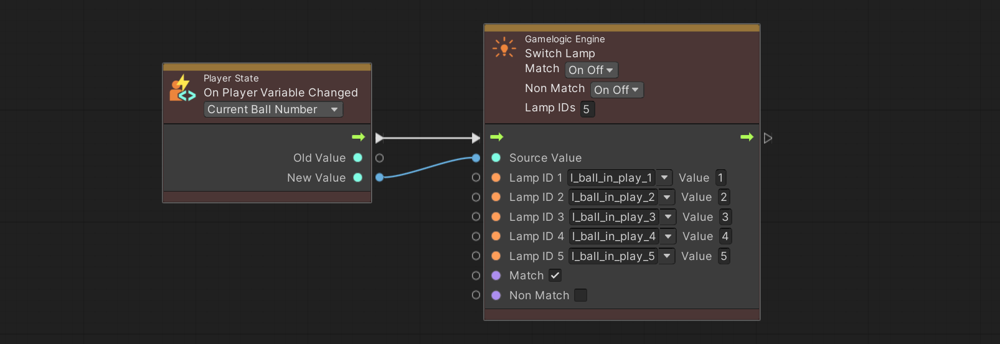
You don't need to populate all possible input values with your lamps. Here is an example that matches only if the current ball number is 0 (no game running), in which case the GAME OVER lamp is set to blinking.
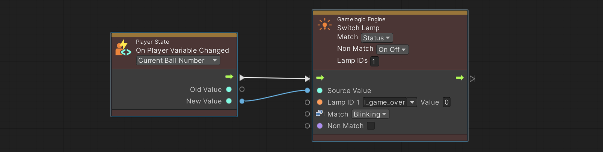
Variables
See Variables for an overview on how variables work. We will be using examples for player variables, but apart from creation and changing, they work the same way as table variables.
Create Player State
This node adds variables for a new player. If the game starts and you want to use player variables, you need to create a player state, even if your game has only one player.
You would typically do it when the game starts. Multiplayer games would execute this node when start is pressed during the first ball.
This node has the following options:
- Auto-Increment automatically sets the player ID. It does that by increasing the largest existing player ID by one.
- Player ID is only visible if auto-increment is not set, and lets you specify the player ID.
- Set as Active will make the newly created player state the current state. This makes sense when a new game is started, but not when new players are added.
- Destroy Previous deletes all player states before creating the new one. This is useful when starting a new game.
Here an example of the player state being created right after the state machine enters the game state, i.e., when the game starts.
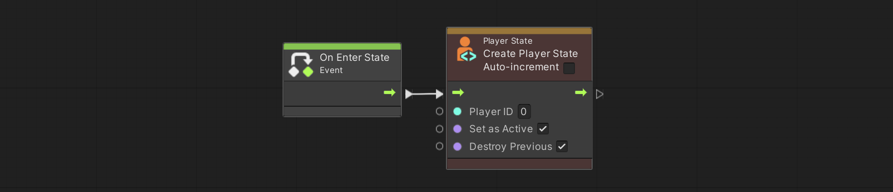
Note
This is one of two nodes that doesn't exist for table variables.
Change Player State
This node swaps out the current player variables with the ones from another player. You do this when a player has finished playing and it's the next player's turn.
The following options are available:
- Next Player automatically choses the next player. If the current player is the last player, the next player is the first player. You typically enable this option when using auto-increment during player state creation. It means that VPE handles the player IDs.
- Player ID lets you explicitly set the ID of the player you want to change to (only visible of Next Player is disabled).
The following is an example of a multiplayer game with infinite balls (i.e., remaining balls are not checked). The flow starts with the drain switch, which then checks whether the current player has any extra balls left. If that's not the case, then the player state is changed to the next player, otherwise the number of extra balls is decreased instead, and finally the eject coil of the trough is pulsed.
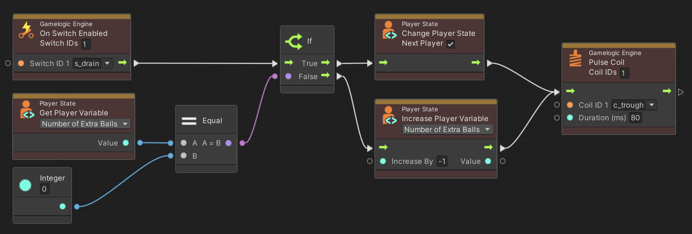
Note
This the second node that doesn't exist for table variables.
Get Player ID
This node gives you access to the player ID. There are three different modes:
- Current returns the ID of the current player
- First return the smallest player ID
- Last returns the largest player ID
A typical example is shown in the next section.
Get Variable
This node returns the value of a given variable. To build on the previous example, let's do a check whether we should end the game if a ball was drained.
To do that, we retrieve the player variable Current Ball Number and check if it's the same as the global variable Balls per Game. If that's the case, we assume that it's the last ball. Then we compare the current player ID to the last player ID. The final And node checks if both conditions are true, and what comes out is whether we should end the game or not.
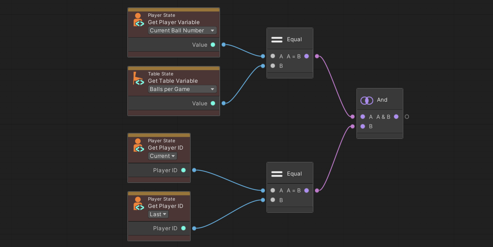
Set Variable
This node applies a given value to a variable. It's very straightforward. Here an example of a trigger enabling the lit status of a bumper.
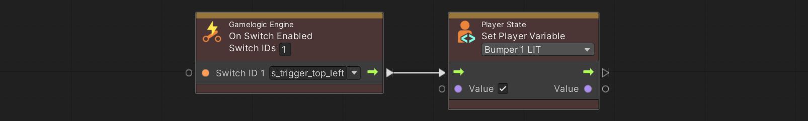
Increase Variable
More often than not, you want to increase a variable by a given value rather than setting an absolute value. This node does exactly that, for integer and float typed variables. For string types, it concatenates the value to the current one. For Boolean types, it inverts the current value, if the input value is true.
A typical example for this node is scoring. This example adds 1000 points to the score when the bumper switch is enabled.
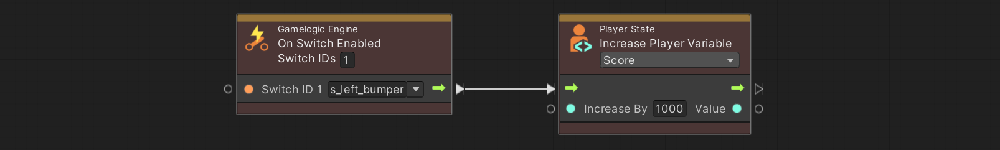
On Variable Changed
One of the main advantages of using VPE's variable system is that you get events when they change. That makes it easy to separate how the variable is updated from what effect updating it causes. That's great, because you shouldn't care why a variable was updated, only when and to which value (see also Synchronizing State).
In this example, we listen to the score variable and fetch it into our Update Display node, which sends the data to our score reel component, which then rotates the reels accordingly. Note that you'll also get the previous value of the variable before it changed.
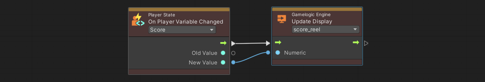
Events
Trigger Pinball Event
This node triggers an event that was previously defined in the inspector of the visual scripting gamelogic engine. It can be fed with an any number of arguments.
In this example we don't set the score directly but emit an event so we can have centralized logic dealing with scores (it's for an EM, and while the reel motor is on, no scoring is skipped):
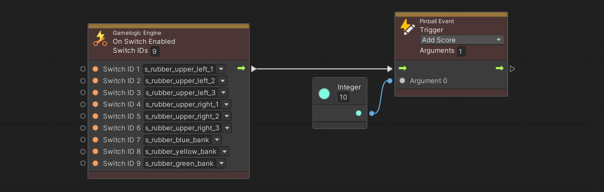
On Pinball Event
On the receiving end, this is the event node that is triggered when a pinball event node with the same event is executed. To continue the previous example, here the graph was triggered by a pinball event, which updates the score if the score reel motor is not running.
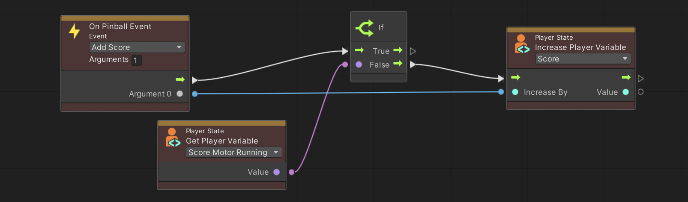
Displays
Creating original graphical content for displays is not yet supported by VPE. We're looking into leveraging Unity's 2D engine to create content and send the result to the different output devices VPE supports. This will most likely be a system independent from visual scripting.
Even if we have nothing that creates the graphical content, we've defined the APIs used to pass the data around. This allows us to already have a working system that supports number and text data.
Clear Display
This node clears a display defined in the GLE.
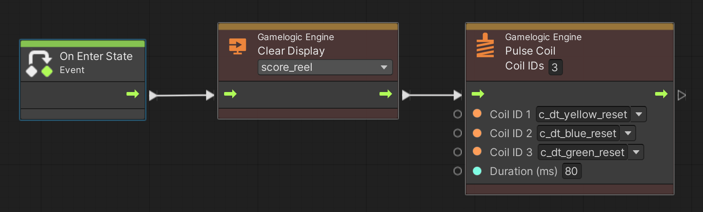
Update Display
This node takes in some data and sends it to one of the displays defined in the GLE. VPE supports segment displays and score reels, so the data can be numeric (score reels and segment displays) or alphanumeric (segment displays).
This example shows how the display is updated for a simple one player EM machine.
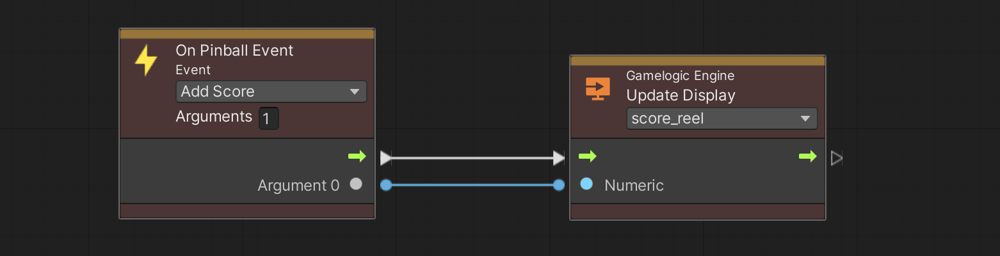
The score reel animation is handled by the component driving the reel. It's also on component level where you can define the speed and delays of the score reel animation and associate a score motor.
On Display Changed
This event is triggered when a display defined in the GLE is updated by Clear Display or Update Display. It is useful for EM machines that use a score motor and need to capture the score in a player variable.
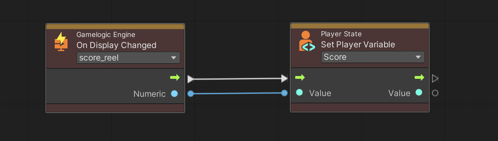